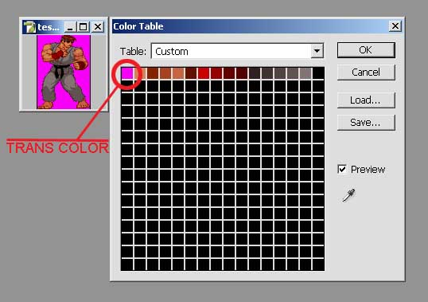

First of all you must have an 8-bit bitmap.
Then the trans color must be the 1st color in the bitmaps palette like picture
shows.
When you make a 8-bit bitmap from photoshop the palette is not recognised right
from
the SetDIBits_8 routine. Show use the acdsee and convert your bitmap
to bitmap again
so you have a palette like above.